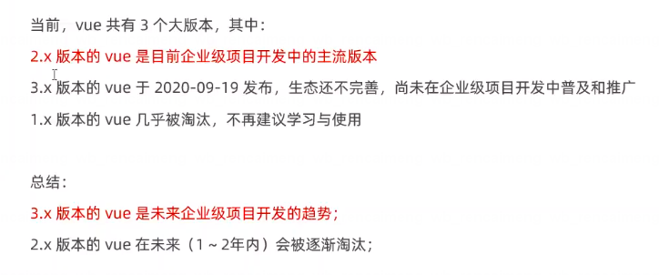
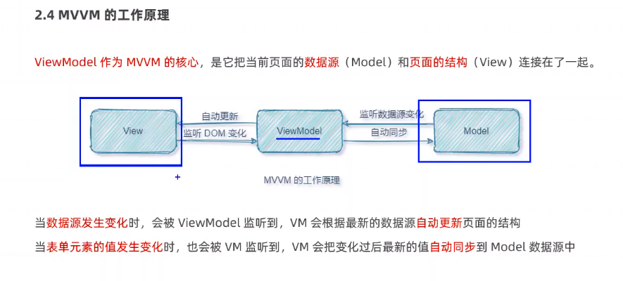
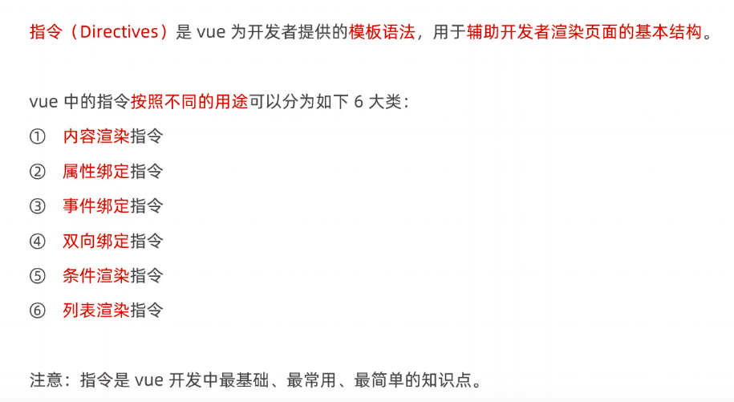

vue基础入门
什么是vue
- 构建用户界面
- 用vue往html页面中填充数据，非常的方便
- 框架
- 框架是一套现成的解决方案，程序员只能遵守框架的规范，去编写自己的业务功能
- 要学习vue，就是在学习vue框架中规定的用法
- vue的指令、组件（是对UI结构的复用）、路由、Vuex、vue组件库
- 只有把上面罗列的内容掌握以后，才有才发vue项目的能力
vue的版本

vue的两个特性
-
数据驱动视图
- 数据的变化会驱动试图自动更新
- 好处：程序员只管把数据维护好，那么页面结构会被vue自动渲染出来
-
双向数据绑定：
在网页中，form表单负责采集数据，Ajax负责提交数据
- js数据的变化，会被自动渲染到页面上
- 页面上表单采集的数据发生变化的时候，会被vue自动获取到，并更新到js数据中

vue的基本使用
基本使用步骤
- 导入vue.js的script脚本文件
- 在页面中声明一个将要被vue所控制的DOM区域
- 创建vm实例对象（vue实例对象）
1 |
|
vue指令

内容渲染指令
-
v-text指令的缺点：会覆盖元素内部原有的内容 -
{{}}插值表达式：在实际开发中用的最多，只是内容的占位符，不会覆盖原有的内容 -
v-html指令的作用：可以把带有标签的字符串，渲染成真正的HTML内容1
2
3
4
5
6
7
8
9
10
11
12
13
14
15
16
17
18
19
20
21
22
23
24
25
26
27
28
29
30
31
32
33
34
35
36
37
38
39
40
41
42
43
<html lang="en">
<head>
<meta charset="UTF-8">
<meta http-equiv="X-UA-Compatible" content="IE=edge">
<meta name="viewport" content="width=device-width, initial-scale=1.0">
<title>Document</title>
</head>
<body>
<!-- 2. 在页面中声明一个将要被 vue 所控制的 DOM 区域 -->
<div id="app">
<p v-text="username">姓名：</p>
<p v-text="gender">性别：</p>
<p>姓名：{{ username }}</p>
<p>性别： {{ gender }}</p>
<p>年龄： {{ gender + 10 }}</p>
<p>年龄： {{ gender + 10 }}</p>
<p>确认： {{ ok ? 'yes' : 'no' }}</p>
<p>消息： {{ message.split('').reverse().join('') }}</p>
<p v-html="info"></p>
</div>
<!-- 1. 导入vue.js 的 script 脚本文件 -->
<script src="https://cdn.bootcss.com/vue/2.6.10/vue.min.js"></script>
<script>
// 3. 创建vm 实例对象 （vue 实例对象）
const vm = new Vue({
// 3.1 指定当前vm实例要控制页面的哪个区域
el: "#app",
data: {
username: "zs",
gender: "女",
age: 22,
ok: false,
message："this is a test message"
info: "<h4 style='color: red; font-weight: bold;'>欢迎大家来学习vue</h4>"
}
})
</script>
</body>
</html>
属性绑定指令
注意：插件表达式只能用在元素的内容节点中，不能用在元素的属性节点中
-
在vue中，可以使用
v-bind指令，为元素的属性动态绑定值 -
简写是英文的
: -
在使用
v-bind属性绑定期间，如果绑定内容需要进行动态拼接，则字符串的外面该包裹单引号，例如：1
<div :title="'box' + index">这是一个div</div>
事件绑定
v-on简写是@- 语法格式为：
1
2
3
4
5
6
7
8<button @click="add"><button>
methods: {
add() {
// 如果在方法中要修改data中的数据，可以通过this访问到
this.count += 1
}
} $event的应用场景：如果默认的事件对象e被覆盖了，则可以手动传递一个$event。例如1
2
3
4
5
6
7
8<button @click="add(3, $event)"></button>
methods: {
add(n,e) {
// 如果在方法中要修改data中的数据，可以通过this访问到
this.count += 1
}
}- 事件修饰符
.prevent1
<a @click.prevent="xxx">链接</a>
.stop1
<button @click.stop="xxx">按钮</button>
v-model指令
- input输入框
- type=“radio”
- type=“checkbox”
- type=“xxxx”
- textarea
- select
条件渲染指令
v-show的原理是：动态为元素添加或移除display: none样式，来实现元素的显示和隐藏- 如果要频繁的切换元素的显示状态，用
v-show性能会更好
- 如果要频繁的切换元素的显示状态，用
v-if的原理是：每次动态创建或移除元素，显示元素的显示和隐藏- 如果刚进入页面的时候，某些元素默认不需要被显示，而且后期这个元素很可能也不需要被展示出来，此时
v-if性能更好
- 如果刚进入页面的时候，某些元素默认不需要被显示，而且后期这个元素很可能也不需要被展示出来，此时
v-if指令在使用的时候，有两种方式：
- 直接给定一个布尔值
true或false1
<p v-if="true">被`v-if`控制的元素</p>
- 给
v-if提供一个判断条件，根据判断的结果是true或false，来控制元素的显示和隐藏1
<p v-if="type === 'A'">良好</p>
VScode中的Vue插件
 微信
微信 支付宝
支付宝
评论